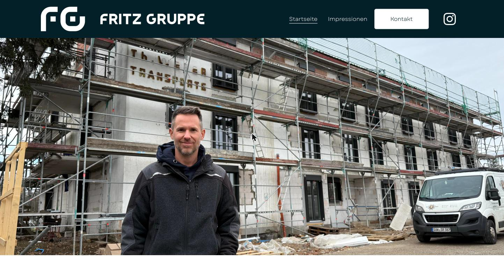
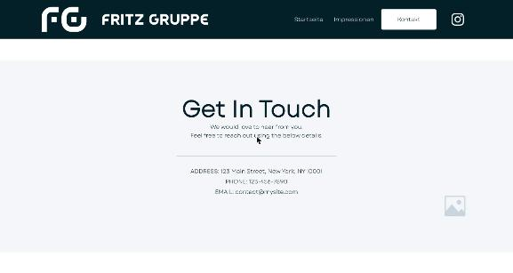
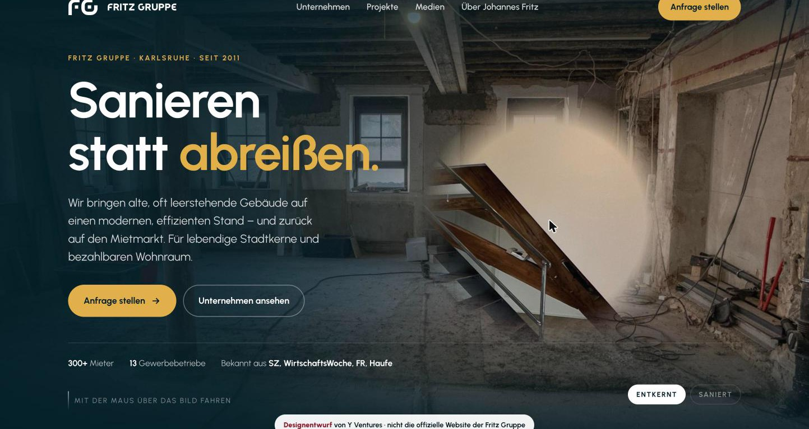
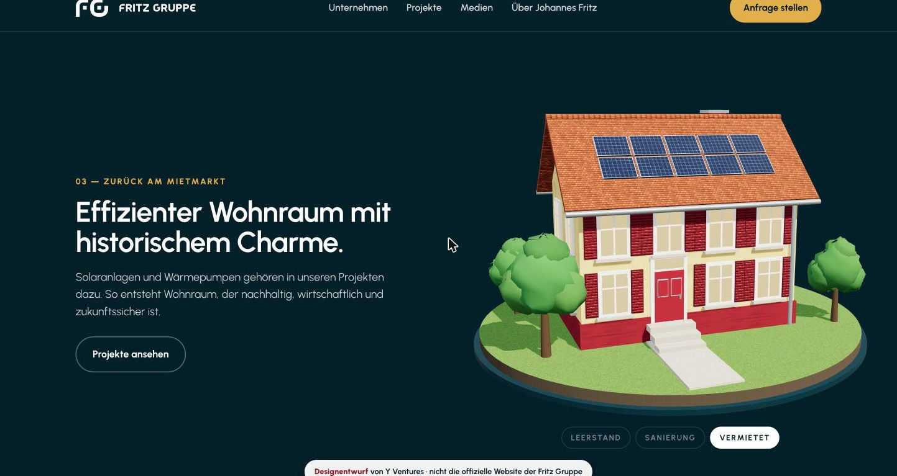

Kurzfassung
Die Substanz ist gut. Die Seite zeigt sie nicht.
Die Fritz Gruppe hat, was viele Unternehmen sich wünschen: eine klare Haltung, echte Projekte und Presse von der Süddeutschen bis zur WirtschaftsWoche. Auf der Website muss man danach suchen. Der erste Bildschirm sagt nicht, was Sie tun, und wer anfragen will, findet nur ein allgemeines Formular.
- Verschlüsselt und schnell erreichbar. Der Server antwortet in 0,14 Sekunden.
- Am Handy lesbar. Die Seite passt sich der Bildschirmbreite an.
- Eigene Fotos statt Stockbilder. Baustellen, Objekte und Johannes Fritz selbst.
- Starke Presse. Elf Beiträge aus 2025 und 2026 sind verlinkt.
- Klare Marke. Logo, Farbe und Schrift sind eigenständig.
- Sitemap und Weiterleitungen stimmen. Google findet alle Seiten, die Adresse ist eindeutig.
Ist-Zustand
So sieht die Seite heute aus


Prüfprotokoll
20 Befunde, nach Bereich geordnet
Jeder Befund ist am 24.11.2026 an der Live-Seite geprüft worden. Die Einstufung zeigt, wie stark er Anfragen, Auffindbarkeit oder Rechtssicherheit betrifft.
Auffindbarkeit bei Google
Im Quelltext der Startseite steht keine h1. Der Seitentitel lautet „Home - Fritz Gruppe“. Google erfährt dadurch nicht, wofür die Seite stehen soll.
Eine klare Hauptüberschrift und ein Seitentitel mit Leistung und Ort, zum Beispiel „Sanieren statt abreißen – Fritz Gruppe Karlsruhe“.
Unter /kontakt-2/, /portfolio/ und /about/ stehen englische Beispielseiten, unter anderem mit der Adresse „123 Main Street, New York“ und contact@mysite.com. Alle drei sind in der Sitemap eingetragen und werden Google damit zur Aufnahme gemeldet.
Musterseiten löschen und aus der Sitemap nehmen.
Als Beschreibung ist der Anfang des Fließtexts hinterlegt. Sie endet mit „… ist heute zu meinem“.
Eigene Beschreibung in zwei Sätzen je Seite.
Die strukturierten Daten enthalten nur Website, Seite, Person und Artikel. Eine Angabe zum Unternehmen mit Anschrift und Tätigkeitsfeldern fehlt.
Strukturierte Daten für die Fritz Gruppe und ihre vier Bereiche ergänzen.
Ohne Alt-Text können weder Google noch Vorleseprogramme die Bilder einordnen.
Alt-Texte für alle Bilder.
Inhalte und Anfragen
Oben steht ein Foto ohne Text und ohne Knopf. Wer die Seite zum ersten Mal öffnet, muss scrollen, um zu verstehen, worum es geht.
Eine Aussage in einem Satz, ein Knopf zur Anfrage und die wichtigsten Belege direkt darunter.
„Über 300 zufriedene Mieter und 13 Gewerbebetriebe“ steht im letzten Absatz eines langen Textes. Die Startseite ist am Bildschirm rund 8.200 Pixel hoch.
Zahlen und Pressenennungen auf den ersten Bildschirm holen.
Wohnungssuchende, Firmen mit Monteuren, Eigentümer und Journalisten landen im selben Formular mit fünf Feldern. Wer ein Monteurzimmer sucht, erfährt nicht, dass Montelio dafür zuständig ist.
Eine Weiche mit vier Anliegen. Jede Anfrage geht an die richtige Stelle, und der Besucher weiß, was als Nächstes passiert.
Auf Startseite, Kontaktseite und im Impressum steht keine Telefonnummer.
Telefonnummer in Kopf, Kontaktbereich und Impressum, am Handy antippbar.
Im Fuß steht vermietung@johannesfritz.net, im Impressum vermietung@johannesfritz.de, und im Quelltext der Startseite ist ein Link auf contact@mysite.com hinterlegt.
Eine Adresse festlegen und überall einheitlich verwenden.
Hotel und Montelio haben einen Knopf „mehr erfahren“. Bei der Vermietung und bei Frimmobau endet der Abschnitt ohne Link oder Kontaktmöglichkeit.
Jeder Bereich bekommt einen eigenen Knopf: Wohnung anfragen, Projekt besprechen.
Der Menüpunkt „Impressionen“ führt auf eine Seite mit der Überschrift „Über mich“, die Lebenslauf, Politik und Privates enthält. Sanierungsprojekte wie Dammheim oder das Boardinghouse in Ettlingen erscheinen nur als Presseartikel.
Ein eigener Bereich „Projekte“ mit Bild, Ort und Eckdaten.
„Immobilienmaneger“ statt „immobilienmanager“, derselbe Beitrag erscheint zweimal (Braunschweiger und Saarbrücker Zeitung), und zwischen zwei Einträgen ist ein Rest aus dem Quelltext („-->“) sichtbar.
Liste bereinigen und einheitlich aufbauen.
Technik und Ladezeit
Im Test am 24.11.2026 (Chrome, 1.366 Pixel Breite) wurden beim ersten Aufruf 34,3 MB übertragen, die Seite war nach 4,5 Sekunden geladen. Der größte Teil sind Fotos in Originalgröße. Das Vorschaubild für geteilte Links hat allein 5,1 MB.
Bilder in passender Größe und modernem Format ausliefern. Im Entwurf ist das größte Bild 0,6 MB groß.
Die Seite läuft mit WordPress, Elementor und Jetpack. Für den Inhalt der Startseite ist das mehr Technik als nötig.
Schlanke Seite ohne Baukasten. Der Entwurf kommt mit drei Skripten aus.
Bilder weiter unten werden schon beim Öffnen der Seite angefordert.
Bilder erst laden, wenn sie in Sichtweite kommen.
Recht und Datenschutz
Es gibt eine Datenschutzerklärung unter /rechtliches/. Auf der Startseite und auf der Kontaktseite führt aber kein Link dorthin, auch nicht am Kontaktformular.
Datenschutz im Fuß jeder Seite und am Formular verlinken.
Die Statistik von stats.wp.com lädt sofort. Die Karte im Seitenfuß lädt beim Scrollen und holt dabei Daten von maps.google.com und Schriften von fonts.googleapis.com. Ein Einwilligungsdialog erschien nicht.
Karte erst nach Klick laden oder durch ein Bild mit Link ersetzen. Statistik ohne Cookies oder mit Einwilligung.
Genannt werden § 5 TMG und § 55 II RStV. Das TMG wurde 2024 durch das Digitale-Dienste-Gesetz abgelöst, der Rundfunkstaatsvertrag 2020 durch den Medienstaatsvertrag.
Impressum auf den aktuellen Stand bringen und anwaltlich prüfen lassen.
Die Seite zur Instagram-Verlosung „8 Osternester“ (März/April 2026) steht weiterhin in der Sitemap.
Seite entfernen oder archivieren.
Entwurf
Fertig gebaut: Sanieren statt abreißen, zum Anfassen
Ihre Philosophie wird zur Hauptsache. Im Startbild macht die Maus aus dem entkernten Altbau den sanierten Raum. Danach verwandelt sich ein 3D-Haus beim Scrollen Schritt für Schritt: Gerüst, neue Fassade, Fensterläden, Solaranlage, Licht in den Fenstern. Alle Texte, Zahlen und Fotos stammen von Ihrer heutigen Seite.


- Vorher und Nachher im StartbildMit der Maus wird aus dem entkernten Altbau der sanierte Raum.
- 3D-Haus zum ScrollenDie Sanierung in drei Schritten, reagiert auf Maus und Finger.
- Unternehmen zum DurchgleitenVier Karten fahren seitlich durchs Bild, jede mit eigenem nächsten Schritt.
- Projekte als BuchDas Buch schlägt beim Scrollen auf und blättert durch Dammheim, Ettlingen und das Denkmalobjekt von 1749.
- Presse als BelegLaufband mit den Medien, darunter die Beiträge.
- Anfrage-Funnel„Was ist Ihr Anliegen?“ Fünf Wege, zwei kurze Fragen, dann die Anfrage an die richtige Stelle.
Der Entwurf ist ein Vorschlag von Y Ventures und keine offizielle Seite der Fritz Gruppe. Das Formular im Entwurf versendet keine Daten.
Angebot
Zwei Wege zum Festpreis
Beide Pakete bauen auf dem Entwurf auf. Sie zahlen einen festen Betrag, keine Stunden.
Paket 1
Neue Startseite
1.490 €netto, einmalig
- Startseite wie im Entwurf, mit Vorher/Nachher, 3D-Haus und Anfrage-Funnel
- Alle Befunde, die die Startseite betreffen
- Musterseiten entfernt, Datenschutz verlinkt
- Eine Korrekturrunde
- Abschlussbericht mit Vorher-Nachher-Vergleich
Paket 2 · Empfehlung
Kompletter Auftritt
3.490 €netto, einmalig
- Alles aus Paket 1
- Eigene Seiten für Unternehmen, Projekte, Medien und Johannes Fritz
- Alle 20 Befunde bearbeitet
- SEO-Optimierung: Seitentitel, Beschreibungen, Überschriften und strukturierte Daten für jede Seite, saubere Sitemap
- Sichtbarkeit vor Ort: Abgleich mit dem Google-Unternehmensprofil, einheitliche Firmendaten auf allen Seiten
- Lead-Funnel: eigene Anfragestrecke je Anliegen, Bestätigung an den Absender, Zustellung an die richtige Adresse
- Auswertung ohne Cookies: welches Anliegen wie oft angefragt wird
- Umzug mit Weiterleitung aller bisherigen Adressen
- Zwei Korrekturrunden und Abschlussbericht
Zahlung: 50 % bei Auftrag, 50 % bei Abnahme. Zahlungsziel 14 Tage. Alle Preise netto zzgl. 19 % USt. Das Angebot gilt bis 24.12.2026.
Voraussetzung: Zugang zur bisherigen Seite und zur Domain oder ein Ansprechpartner, der beides betreut.
Nicht enthalten: Rechtsberatung, neue Fotos oder Videos sowie die Seiten von 133 Boutique Hotel, Montelio und Frimmobau.
Ablauf
In vier Schritten zur neuen Seite
- Freigabe und ZugangSie wählen ein Paket und geben uns Zugang zu Seite und Domain.
- AbstimmungWir gehen den Entwurf gemeinsam durch: Texte, Bilder, Ansprechpartner je Anliegen.
- UmsetzungWir bauen die Seite fertig und zeigen sie Ihnen vorab unter einer Testadresse.
- AbnahmeSie geben frei, wir schalten live und liefern den Abschlussbericht.
Nächster Schritt
Ein kurzes Gespräch genügt
Schauen Sie sich den Entwurf an und sagen Sie uns, was Ihnen gefällt und was nicht. Yves Unser, Telefon 0151 50797898, yventures@icloud.com.